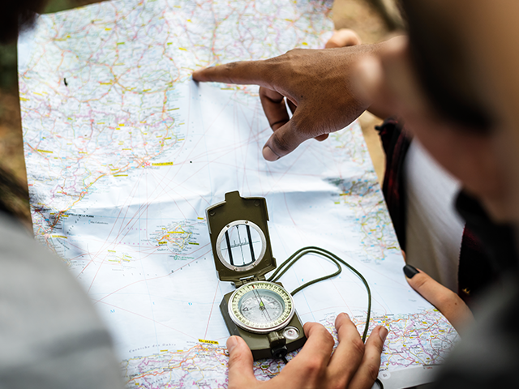
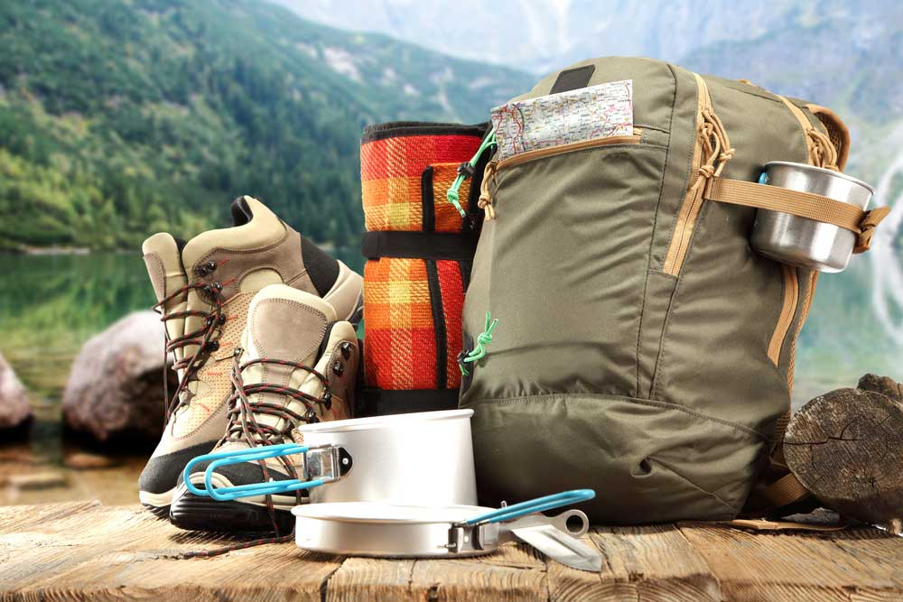

Tips Pendakian
Persiapkan diri Anda dengan baik untuk pengalaman mendaki yang aman dan menyenangkan.

Perencanaan & Navigasi
Selalu rencanakan rute Anda, periksa kondisi cuaca, dan bawa peta serta kompas atau GPS. Jangan hanya mengandalkan ponsel.

Peralatan Wajib
Gunakan sepatu gunung yang nyaman, bawa jaket hangat, air minum cukup, serta kotak P3K dasar.

Keselamatan
Jangan mendaki sendirian. Selalu beri tahu keluarga/teman tentang rute dan estimasi waktu turun.